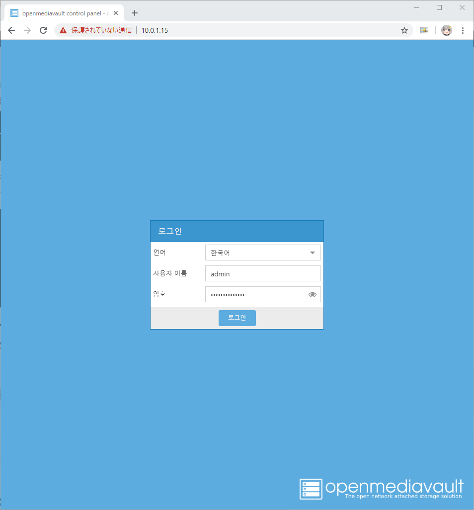

라즈베리파이에 openmediavault(OMV) 5 설치하기
라즈베리파이에 openmediavault(OMV) 5 설치하기
안녕하세요. AkibaTV입니다.
이번에 소개할 내용은 라즈베리파이에 openmediavault 설치하기 입니다.
openmediavault 란 무엇입니까?
openmediavault는 데비안 리눅스 기반의 차세대 NAS (Network Attached Storage) 솔루션입니다.
SSH, (S) FTP, SMB / CIFS, DAAP 미디어 서버, RSync, BitTorrent 클라이언트 등의 서비스가 포함되어 있습니다.
프레임 워크의 모듈식 설계 덕분에 플러그인을 통해 기능을 향상시킬 수 있습니다.
openmediavault는 주로 소규모 사무실이나 본사에서 사용하도록 설계되었지만 이러한 시나리오에만 국한되지는 않습니다.
모든 사용자가 심도있는 지식없이 Network Attached Storage를 설치 및 관리 할 수있는 간편하고 사용하기 쉬운 솔루션입니다.
https://www.openmediavault.org/
openmediavault(OMV) 5를 설치하시기 위해선 우선 라즈베리파이에
라즈베리파이 OS를 설치를 해주시기 바랍니다.
설치 방법은 [모니터없이 라즈베리파이3 B 설치하기]를 참고해 주시기 바랍니다.

라즈베리파이 OS가 설치 완료된 상태 입니다.
라즈베리파이의 모든 설정과 업데이트가 끝났습니다.
재시작을 해주시기 바랍니다.
재시작을 하셨으면 라즈베리파이를 VNC로 여시고 터미널을 실행해 주세요.

이제 본격적으로 openmediavault(OMV)를 설치하기에 앞서 아래의 명령어로 업데이트 및 업그레이드를 합니다.
1 | # 업데이트 |
재부팅을 하셨으면 라즈베리파이를 VNC로 여시고 터미널을 실행해 주세요.
아래의 명령어를 입력해서 openmediavault(OMV) 설치를 하도록 하겠습니다.
명령여는 omv-5.txt 링크를 여시면 나오는 내용을 복사해서 붙여넣어서 실행 하는것을 추천합니다.
1 | # openmediavault(OMV) 5 설치 명령어 |
한참 설치후 VNC접속이 끊긴후 이와같은 화면이 나오게 되면 설치가 완료가 된것입니다.
openmediavault(OMV)를 확인하기 위해선 브라우저를 실행하시기 바랍니다.
웹브라우저의 URL에 http://OMV가 설치된 라즈베리파이 IP 를 입력하시고 접속해 주세요.

초기 ID : admin
초기 Password :openmediavault
정상적으로 접속이 되었으면 이걸로 라즈베리파이에 openmediavault(OMV) 5 설치하기가 완료 되었습니다.